Wie bei allen Arbeiten im Gleisbereich muss der Beauftragte des Unternehmers vor Ort entscheiden, ob die Sicherungsmaßnahmen der Planung entsprechend umgesetzt und ausreichend sind. Dies betrifft bei gleisgebundenen Großmaschinen mit ihren hohen Störschallspitzen z. B. an Räumkette, Schotterauswurf, Schwellenaufnahme insbesondere die Wahrnehmbarkeit akustischer Signale von automatischen Warnsystemen an den Arbeitsplätzen auf der Betriebsgleisseite, Abb. 8-1. Da die Arbeitsbewegung der Maschine aus verfahrenstechnischen Gründen im Regelfall bei einer Fahrt im Nachbargleis nicht unterbrochen wird, besteht die Gefahr, dass sich die Beschäftigten nach der Warnung weiter auf ihre Arbeitsaufgabe konzentrieren und auch ausreichend laute Warnsignale nicht befolgt werden.
Die Abstände der akustischen Signalgeber werden vom Sicherungsunternehmen anhand des vom Baumaschinenbetreiber angegebenen Störschallpegels ermittelt, Abb. 2-12 und 8-2. Dabei ist der Nahbereichspegel 1 m neben der Maschine in Ohrhöhe der Beschäftigten zu verwenden, nicht etwa der Emissionspegel, der z. B. 10 m neben der Maschine gemessen wurde. Der Warnsignalschalldruckpegel muss am Ohr der Beschäftigten mindestens 3 dB(A) lauter sein als das Störgeräusch. Gelingt die Wahrnehmbarkeitsprobe unter den zu erwartenden ungünstigsten Bedingungen (d. h. auch: Maschine unter Volllast) nicht, darf mit der Arbeit nicht begonnen werden. Bei der Wahrnehmbarkeitsprobe muss festgestellt werden, ob die Beschäftigten das Warnsignal trotz Konzentration auf ihre Arbeitsaufgaben bei laufender Maschine wahrnehmen.
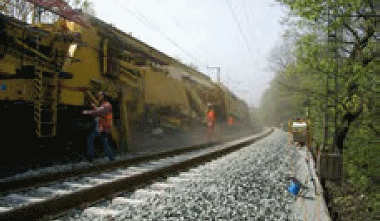
| Abb. 8-1: | Arbeitsplätze auf der Mittelkernseite einer Planumsverbesserungsmaschine. |
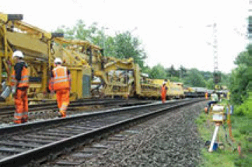
| Abb. 8-2: | Automatisches Warnsystem für die Warnung der Beschäftigten (Zentrale der feldseitigen Warnanlage steuert Maschinenwarnanlage des Umbauzuges an). |
Fließbandmaschinen (FV-Maschinen: Bettungsreinigungsmaschinen, Planumsverbesserungsmaschinen, Gleisumbauzüge) sind mit funkangesteuerten maschineneigenen automatischen Warnsystemen ausgerüstet, die die sichere Wahrnehmbarkeit der Warnsignale gewährleisten, Abb. 8-3. Seit 1.7.2011 sind Maschinenwarnsysteme Pflicht für FV-Maschinen, die bei der DB Netz AG eingesetzt werden [33]. Die Anordnung der Signalgeber wird dabei anhand einer Maschinengeräuschmessung im Arbeitsbetrieb und einer Projektierung nach akustischen Gesetzmäßigkeiten festgelegt. Mit der Maschinenwarnanlage werden die Arbeitsplätze auf der Betriebsgleisseite der Maschine (z. B. Mitgänger am Umbauzug zum Bedienen der Schienenführungszangen) gesichert. Die akustischen Warnsignale werden von der Maschine und von der feldseitigen Warnanlage zeitgleich gegeben und haben – auch bei unterschiedlichen Warnsystemherstellern – den gleichen Signalcharakter (bei der DB Netz AG ist vorgesehen, ab 1.1.2014 einheitlich das bi-sound-Signal zu verwenden). Wegen der Vor- und Nachläuferkolonnen kann bei gleisgebundenen Großmaschinen generell nicht auf die ortsfeste feldseitige Warnanlage verzichtet werden. Die Ausrüstung der Maschinen mit fest installierten Warnsystemen trägt wesentlich zur Verringerung der nachts problematischen Geräuschemissionen bei, da die Signalpegelspitze mit der Störschallspitze (Maschine) „mitwandert“.
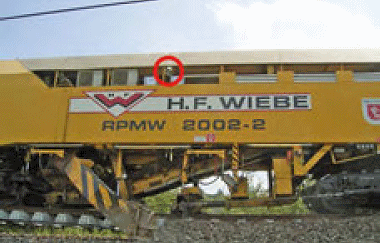
| Abb. 8-3: | Maschineneigenes funkangesteuertes automatisches Warnsystem auf einer Planumsverbesserungsmaschine. |
Für die Festlegung der Sicherungsmaßnahme durch die für den Bahnbetrieb zuständige Stelle (BzS) ist die Arbeitsbreite eine wesentliche Größe. Bei Fließbandmaschinen setzt sich die erforderliche Arbeitsbreite aus der halben Breite der Maschine in Arbeitsstellung und aus dem Arbeitsraum für die auf der Nachbargleisseite mit der Maschine mitgehenden Bediener („Seitenläufer“) zusammen. Bei Fließbandmaschinen wird immer mindestens ein Seitenläufer eingesetzt.
Sowohl bei den Gleisumbauzügen (Bedienen der Schienenzangen auf ca. 50 bis 70 m Länge) als auch bei den Bettungsreinigungs- und Planumsverbesserungsmaschinen (Messarbeiten und Kontrollarbeiten im Bereich der Räumkette(n)) ergibt sich die erforderliche Arbeitsbreite zu ca. 3 m (gemessen ab Achse Arbeitsgleis in Richtung Nachbargleis, Abb. 8-4), um den Arbeitsraum für den Seitenläufer zu berücksichtigen.
Addiert man zu diesen 3 m den Gefahrenbereich des Nachbargleises (z. B. 2,1 m bei 70 km/h, Verringerung bei Fester Absperrung (FA) um 0,2 m gemäß GUV-R 2150 [16] 5.8) erhält man einen Gleisabstand von 5 m, von dem ab eine FA) zwischen Arbeitsgleis und Nachbargleis möglich ist. Ein Gleisabstand von 5 m existiert auf der freien Strecke im Regelfall nicht (Gleisabstände i. d. R. 4,0 m, auf Schnellfahrstrecken 4,5 m bzw. 4,7 m, in Bahnhöfen 4,5 m). Wenn das Nachbargleis für den Einsatz der Fließbandmaschine nicht gesperrt wird, ist das automatische Warnsystem auf der Feldseite des Nachbargleises mit Ansteuerung der Maschinenwarnanlage die notwendige Sicherungsmaßnahme. Beim Einsatz von Fließbandmaschinen darf eine FA erst ab einem Gleisabstand von 5,00 m installiert werden (vgl. Modul 132.0118 [25] der DB).
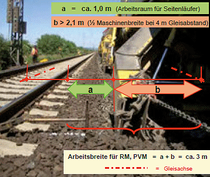
| Abb. 8-4: | Arbeitsbreite bei einer Bettungsreinigungsmaschine (1/2 Maschinenbreite + Arbeitsraum für Seitenläufer = 3 m). |
Der Unternehmer gibt bei der DB auf der Seite 1 des Sicherungsplans an, welche Arbeitsbreite seine Fließbandmaschine benötigt (mindestens 3 m) und wie viele Seitenläufer an welchen Stellen der Maschine eingesetzt werden (mindestens ein Seitenläufer). Für die Seitenläufer legt der Unternehmer die Sicherheitsräume fest, die bei Warnung vor einer Zugfahrt im Nachbargleis aufzusuchen sind. Erforderliche Wege längs der Maschine im Nachbargleis müssen durch eine Erhöhung der Sicherheitsfrist berücksichtigt werden.
Die BzS
Mit Einführung der maschineneigenen Warnung auf Großbaumaschinen ist zwar gewährleistet, dass das Warnsignal technisch sicher und sicher hörbar gegeben wird. Es besteht aber die Gefahr, dass Seitenläufer im Mittelkern nicht rechtzeitig auf das Warnsignal reagieren, weil sie ihre Aufmerksamkeit auf die Überwachung des Arbeitsprozesses konzentrieren, z. B. bei einem Umbauzug auf einen Schweißstoß, auf den die Schienenzange zuläuft.
Bei Fließbandmaschinen ist immer mindestens ein Seitenläufer abzusichern. Der Seitenläufer signalisiert dem Überwachungsposten mit Handzeichen, dass er das Warnsignal aufgenommen hat. Bei jeder Fließbandmaschine ist mindestens ein Überwachungsposten erforderlich, der auf dem Randweg des Nachbargleises in Höhe des Seitenläufers mit der Großbaumaschine mitgeht und bei ausbleibender oder nicht zeitgerechter Reaktion des Seitenläufers über die Maschinenwarnanlage das Signal Ro 3 gibt bzw. das Warnsignal wiederholt. Derzeit wird dieses Signal noch mit händisch mitgetragenen Starktonhörnern gegeben, zukünftig kann die Maschinenwarnanlage per Handfunksender durch den Überwachungsposten erneut ausgelöst werden bei noch anstehendem Warnzustand (signalisiert durch die optischen Erinnerungsanzeigen). Zusätzlich sind die Ausgänge der Maschine zum Betriebsgleis soweit wie möglich zu verriegeln, um ein irrtümliches Aussteigen zu dieser Seite auszuschließen.
Der Bauunternehmer gibt die für die Sicherungsplanung erforderlichen Angaben an die BzS (DB Netz AG: Seite 1 des Sicherungsplans [25]):
Die Maschinenwarnanlage muss immer zeitgleich mit der nächststehenden feldseitigen Warnanlage auslösen. Die Warnbereichsumschaltung der Maschinenwarnanlage erfolgt derzeit noch durch Sicherungspersonal von Hand. Das Bauunternehmen muss den dafür erforderlichen gefahrfreien Zugang zu den Warnsystemkomponenten auf der Maschine bereitstellen (z. B. zum Funkempfänger, Abb. 8-6).
Beide Beteiligten sollten die Funktion der Maschinenwarnung in ihrem Verantwortungsbereich vor Schichtbeginn kontrollieren:
Bei Einsatz von Fließbandmaschinen im Innengleis kann wegen der Gefahr der Signalverwechslung nur für eines der beiden Nachbargleise gewarnt werden. Das Gleis auf der anderen Seite muss dann gesperrt werden oder es wird bei > 5 m Gleisabstand eine FA eingesetzt.
Arbeitet die Fließbandmaschine im äußeren von drei Gleisen, hat der Überwachungsposten neben dem Nachbargleis ggf. keinen sicheren Standplatz. Neben dem dritten Gleis könnte ihm die Sicht durch Fahrten im dritten Gleis versperrt werden. Der Überwachungsposten kann dann auf der Maschine stehen und von dort das Verhalten der Seitenläufer nach der Warnung beobachten und die Maschinenwarnanlage bei Bedarf erneut auslösen.
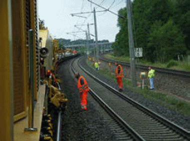
| Abb. 8-5: | Überwachungsposten auf dem Randweg des Nachbargleises, der das Verhalten des Seitenläufers an der Fließbandmaschine nach der Warnung beobachtet und falls erforderlich per Starktonhorn das Warnsignal wiederholt bzw. Ro 3 gibt bzw. zukünftig per Handfunksender die Maschinenwarnanlage erneut auslöst. |
Bei Fließbandmaschinen ragt der zu sichernde Bereich wegen der Arbeiten an Vorund Nachläufereinheiten (Bunkerschüttgutwagen, Schwellenwagen), mit denen die Oberbaumaterialien antransportiert bzw. abgefahren werden, am Baulosanfang und am Baulosende weit über den zu bearbeitenden Gleisabschnitt hinaus, Abb. 8-7. Die Vor- und Nachlauflängen müssen beim Einsatz von Fließbandmaschinen in die Sicherung einbezogen und der BzS für die Planung der Aufbaulänge des automatischen Warnsystems vom Unternehmer angegeben werden (DB: Seite 1 des Sicherungsplans [25]: „Entfaltungslänge“).
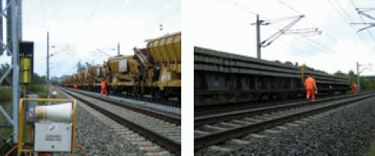
| Abb. 8-6: | Funkempfänger, der vom Sicherungsunternehmen zur Ansteuerung der Maschinenwarnanlage auf die Gleisbaumaschine gestellt wird. |
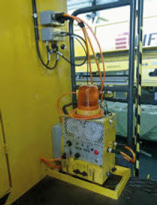
| Abb. 8-7: | Der für Materialwagen zu sichernde Bereich ragt am Baulosanfang und/oder Baulosende weit über das Ende des bearbeiteten Gleisabschnitts hinaus (links: Bunkerschüttgutwagen einer Planumsverbesserungsmaschine, rechts Schwellenwagen eines Umbauzuges). |
Bevor Maschinenkomponenten in ein benachbartes Gleis geschwenkt werden, muss dieses Gleis für Fahrten gesperrt sein. Bei der Einstellung der Begrenzungen für ausschwenkbare Maschinenkomponenten müssen die Gleislageparameter des benachbarten Gleises berücksichtigt werden (Gleisabstand, Bogenradius, Überhöhung).
Bei Arbeiten mit Bettungsreinigungsmaschinen, Planumsverbesserungsmaschinen und Gleisumbauzügen muss die Fahrleitung ausgeschaltet und bahngeerdet/kurzgeschlossen sein. Es ist immer damit zu rechnen, dass Teile der Maschine arbeitsbedingt bestiegen werden müssen, z. B. zum
Bei einer Fahrdrahthöhe von 4,95 m über Schienenoberkante (SO) und 1,5 m Mindestschutzabstand darf sich die Höhe der Standfläche für Personen (Waggonboden) maximal 1,45 m über SO befinden, wenn die Oberleitung eingeschaltet ist, Abb. 8-8. Besteht die Gefahr, dass arbeitsbedingt ein höherer Standort eingenommen wird – z. B. um eine auf einem Schwellenstapel liegende Verzurrung zu erreichen – reicht die Verhaltensanweisung „Ladung nicht besteigen“ nicht aus, da ein vorhersehbares Fehlverhalten einkalkuliert werden muss. Die Fahrleitung muss dann ausgeschaltet und bahngeerdet/kurzgeschlossen sein. Anderenfalls dürfen nur Arbeiten unter metallischen Schutzdächern durchgeführt werden.
Die BzS muss die Grenzen des ausgeschalteten Fahrleitungsabschnitts festlegen. Dabei sind die Vor- und Nachlauflängen der Maschinen am Ende und am Beginn des Bauloses zu berücksichtigen (Bettungsreinigungsmaschinen und Planumsverbesserungsmaschinen: Bunkerschüttgutwagen, Umbauzug: Schwellenwagen).
Besonders sorgfältige Ablaufplanung und Einweisung sind z. B. erforderlich, wenn die Materialwagen hinter dem Baulosende einen Abschnitt unter nicht ausgeschalteter Fahrleitung erreichen (Beispiel: Schwellenwagen eines Umbauzuges im Bahnhofsgleis). Da der Umbauzug mit den Schwellenwagen ohne Sicherung der Ladung nicht verfahren werden darf, muss die Fahrleitung ausgeschaltet und geerdet sein, bevor die Schwellenwagen zum Verzurren der Altschwellen bestiegen werden. Bei der DB sind bei Einsatz von Baumaschinen unter der Oberleitung 15 kV die Sicherheitsmaßnahmen nach Ril 824.0106 [29] zwingend einzuhalten.
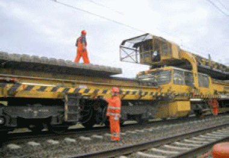
| Abb. 8-8: | Bei Arbeiten auf dem Umbauzug muss die Oberleitung ausgeschaltet und bahngeerdet sein. |
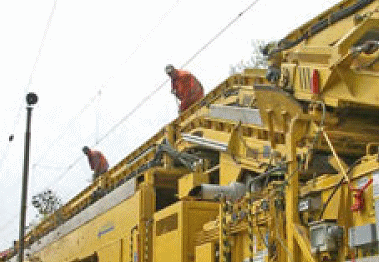
| Abb. 8-9: | Bei Arbeiten an hochliegenden Förderbändern muss die Oberleitung ausgeschaltet und bahngeerdet sein. Zum Schutz vor Absturz ist Anseilschutz einzusetzen. |
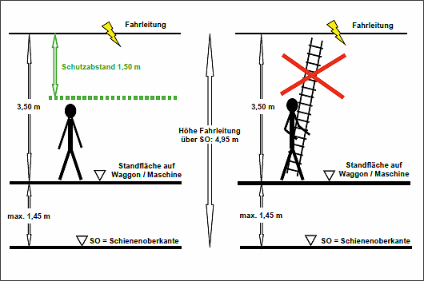
| Abb. 8-10: | Bei Aufenthalt auf Waggons oder Maschinen muss der Schutzabstand zur Oberleitung eingehalten werden. Bei einer Oberleitungshöhe von 4,95 m darf die Standhöhe über Schienenoberkante max. 1,45 m betragen. Arbeiten mit aufragenden Gegenständen sind nicht zulässig. |
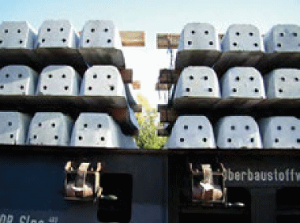
| Abb. 8-11: | Da die Schwellenwagen bestiegen werden müssen, um die Drahtverzurrung der Schwellen für den Umbauzug- Einsatz zu lösen, muss die Fahrleitung ausgeschaltet und bahngeerdet sein. |
Die Arbeitseinrichtungen der Maschinen wie z. B. Räumketten für Schotter, Schwellenaufnahme- und Schwellenverlegeeinrichtungen, Förderbänder für Schwellen und Schotter dürfen nur in Betrieb genommen werden, wenn die gemäß Betriebsanleitung erforderlichen Schutzeinrichtungen vorhanden und funktionsfähig sind. Der Aufenthalt im durch diese Arbeitseinrichtungen gefährdeten Bereich ist während des Betriebs nicht zulässig. Dies muss auch gegenüber Beschäftigten Dritter (z. B. Beobachtung wegen Kabeln oder Kampfmitteln) durchgesetzt werden. Die Funktion der Not-Aus-Einrichtungen ist regelmäßig zu prüfen. Diese dürfen nicht als Betriebs- Stopp missbraucht werden.
Bei ausnahmsweise erforderlichem Aufenthalt im durch die Arbeitseinrichtungen gefährdeten Bereich (z. B. zur Störungsbeseitigung) muss sichergestellt sein, dass diese sich nicht unbeabsichtigt in Bewegung setzen können oder irrtümlich bewegt werden. Die Maschinenbediener müssen wissen, welche Bedeutung die unterschiedlichen Stopp-Funktionen haben (z. B. „Not-Stopp“, „Zyklus-Stopp“) und welche Bedienhandlungen erforderlich sind, bevor eine Störung im Gefahrbereich der Arbeitsaggregate beseitigt werden darf. Die Herstellervorgaben (z. B. Sicherung gegen ungewollten Wiederanlauf über einen Schlüsselschalter) sind genau einzuhalten, Abb. 8-12.
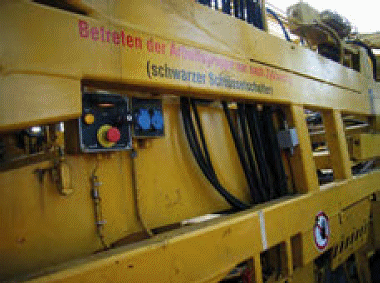
| Abb. 8-12: | Das Betreten der Gefahrenbereiche der Arbeitseinrichtungen ist nur zulässig, wenn diese gegen ungewollten Wiederanlauf gesichert sind (Beispiel: Umbauzug). |
Bei Gleisumbauzügen muss der Arbeitsablauf so organisiert sein, dass sich im Fahrweg der Portalkrane keine Arbeitsplätze befinden. Die Beschäftigten sind zu unterweisen, dass der Aufenthalt im Portalkranfahrweg unzulässig ist und dass an den Portalkranschienen Quetschgefahr für die Hände besteht. Da der Portalkranfahrer Sicht auf den Fahrweg haben muss, der bei Nacht ausgeleuchtet wird, sollen die Portalkrane mit Kamera-Monitor-Systemen ausgerüstet sein. Bei Einsatz mehrerer Portalkrane auf einem Umbauzug ist die Schutzeinrichtung zur automatischen Sicherung vor Kollision in Betrieb zu nehmen. Vor Arbeitsbeginn ist zu prüfen, ob alle Überfahrbrücken der Portalkranfahrschienen eingelegt sind.
Wenn die Maschine am Schichtende transportfertig gemacht wird, muss sorgfältig geprüft werden, dass die Transportsicherungen für alle beweglichen Komponenten wirksam sind.